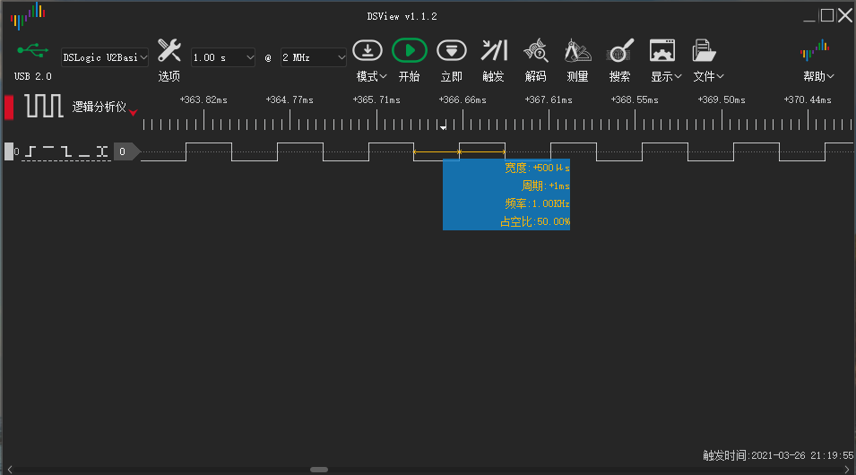

硬件PWM控制风扇
PWM控制风扇
参考文档
https://www.kernel.org/doc/Documentation/pwm.txt
pin
https://datasheets.raspberrypi.org/bcm2711/bcm2711-peripherals.pdf
Chapter 5. General Purpose I/O (GPIO)
5.3. Alternative Function Assignments
GPIO12
dtbo
arch/arm/boot/dts/overlays/pwm-overlay.dts
arch/arm/boot/dts/overlays/README
Name: pwm Info: Configures a single PWM channel Legal pin,function combinations for each channel: PWM0: 12,4(Alt0) 18,2(Alt5) 40,4(Alt0) 52,5(Alt1) PWM1: 13,4(Alt0) 19,2(Alt5) 41,4(Alt0) 45,4(Alt0) 53,5(Alt1) N.B.: 1) Pin 18 is the only one available on all platforms, and it is the one used by the I2S audio interface. Pins 12 and 13 might be better choices on an A+, B+ or Pi2. 2) The onboard analogue audio output uses both PWM channels. 3) So be careful mixing audio and PWM. 4) Currently the clock must have been enabled and configured by other means. Load: dtoverlay=pwm,<param>=<val> Params: pin Output pin (default 18) - see table func Pin function (default 2 = Alt5) - see above clock PWM clock frequency (informational)
/boot/config.txt
dtoverlay=pwm,pin=12,func=4
steps
https://github.com/LowLevelOfLogic/RaspberryPi/tree/IP_Camera
python3 stream.py
http://192.168.3.8:5000/
cd /sys/class/pwm/pwmchip0
echo 0 > export
ls
capture duty_cycle enable period polarity power uevent
period
The total period of the PWM signal (read/write). Value is in nanoseconds and is the sum of the active and inactive time of the PWM.duty_cycle
The active time of the PWM signal (read/write). Value is in nanoseconds and must be less than the period.
cd pwm0
echo 1000000 > period
echo 500000 > duty_cycle
echo 1 > enable
宽度：500us
周期：1ms
频率：1KHz
占空比：50%
频率太低，能听到刺耳的声音，将频率拉高；
echo 5000 > duty_cycle
echo 10000 > period
宽度：5us
周期：10us
频率：100KHz
占空比：50%
https://github.com/LowLevelOfLogic/RaspberryPi/tree/FanHAT